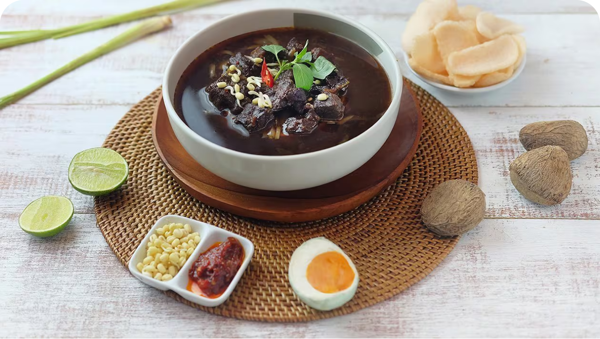

Yuk kenalan!

Rawon adalah makanan khas Jawa Timur yang terkenal dengan kuah hitamnya. Masakan ini terdiri dari daging sapi, tauge, dan kuah hitam yang dibumbui dengan rempah seperti keluak, bawang merah, bawang putih, dan kencur.

Sate lilit adalah makanan khas Bali, terutama di daerah Klungkung. Seperti namanya, sate ini dibuat dengan cara melilit daging ke tusukan.